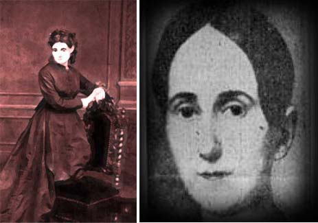

Mentioned earlier in the introduction, killings committed by women were often less brutal and violent compared to killings made by men. On top of that, these women are of often diagnosed with mental illness due to trauma and abuse they have endured growing up.
However, there seems to be one woman that breaks this image: Delphine LaLaurie. Madame LaLurie is notorious for her alleged abuse and torture on her slaves. Descriptions of her murders are brutal and grotesque, many of which would make you question how anyone could ever think up of such a thing.

Madame LaLaurie was originally born as Marie Delphine Macarty at March 19, 1787 in New Orleans. Born to parents that were prominent in the town's community and a part of a family that held political power in different regions of the United States, it is unlikely that LaLaurie suffered a traumatic childhood that would influence her to become a murderer. She did, however, lose an uncle who was murdered by his own slaves when she was only four years old. This was due to the Haitian Revolution, where slaves were inspired to rebel against their masters and fight for freedom. While the rebellion itself was taking place in Haitia, slave owners in the U.S. feared that they would suffer the same fate as LaLaurie's uncle, thus taking repercussions and disciplining their slaves much harsher than they usually do. It is likely that LaLaurie may have witnessed the worsened treatment towards slaves during this impressionable time in her life.
LaLaurie was also married to her first husband, Don Ramón de Lopez y Angulo, at the young age of thirteen and widowed only four years later and left with a daughter to raise alone. This could have played a role in LaLaurie's later atrocities, but marrying at an age that young was not unheard of. LaLaurie remarried again at 1806 to Jean Blanque and bore four children. She unfortunately was widowed again at 1816.
It was only during her third marriage in 1825 where her torture was exposed, though it is quite possible that her abuse could have began much earlier. In 1831, she purchased her own property, 1140 Royal Street, where she took care of the property herself with very little help from her husband. In 1832, she built a two-story mansion at 1140 Royal Street, better known as the LaLaurie mansion. It was here where majority of her torture occured and became the very place that exposed her crimes against humanity.
In 1834, a fire broke out in the mansion. While trying to tame the flames, the police and firefighters came across a cook chained to a stove. It was here where she revealed that she set the house on fire on purpose as an attempted suicide attempt to escape the conditions her and all of the slaves were living in. She instructed the responders to go to the top floor to expose the atrocities LaLaurie committed against her slaves. LaLaurie refused to give the keys to the top floor but the responders broke the door down. What layed before their eyes was so disturbing that when people outside heard about the scene, they went to fully burn down the mansion.
LaLaurie and her family escaped to France. It is unknown whether she spent her final years in France or if she ever returned to New Orleans under a new identity.